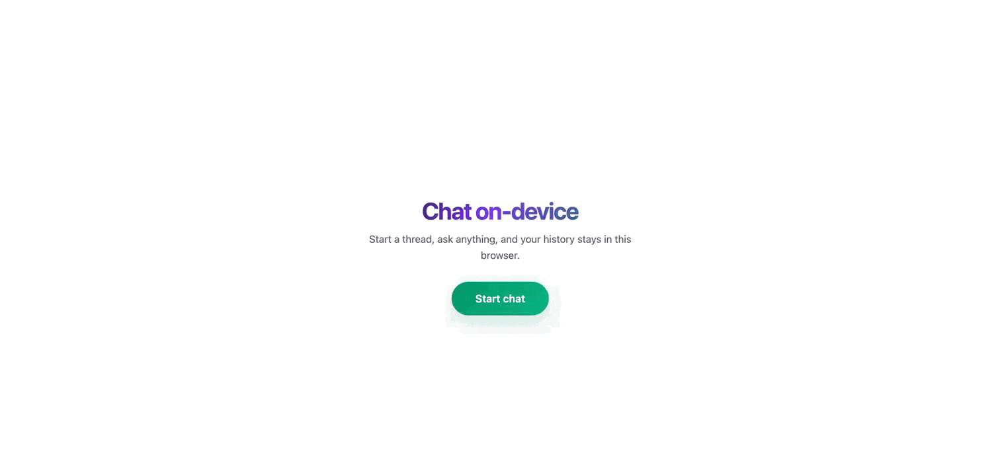
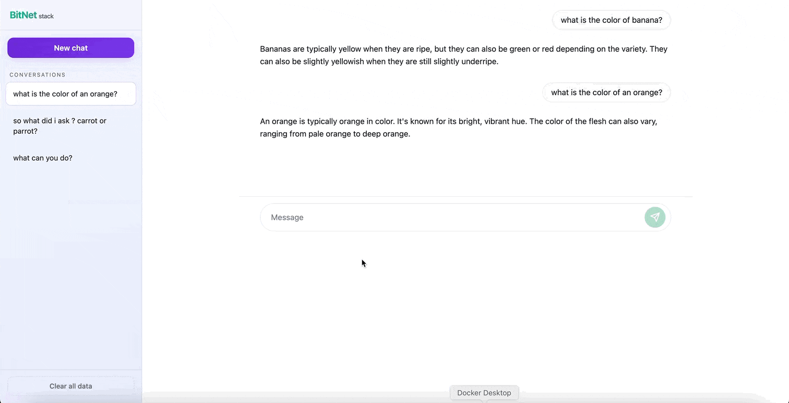
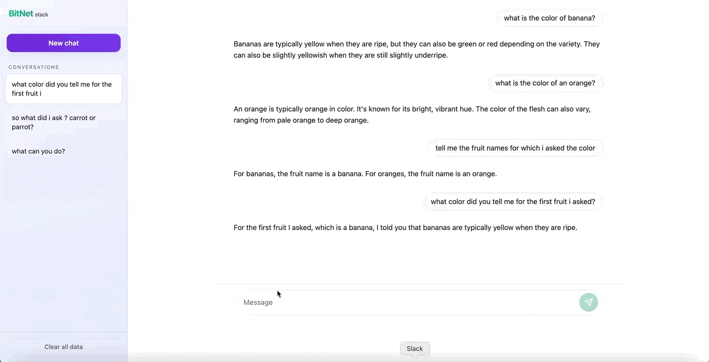
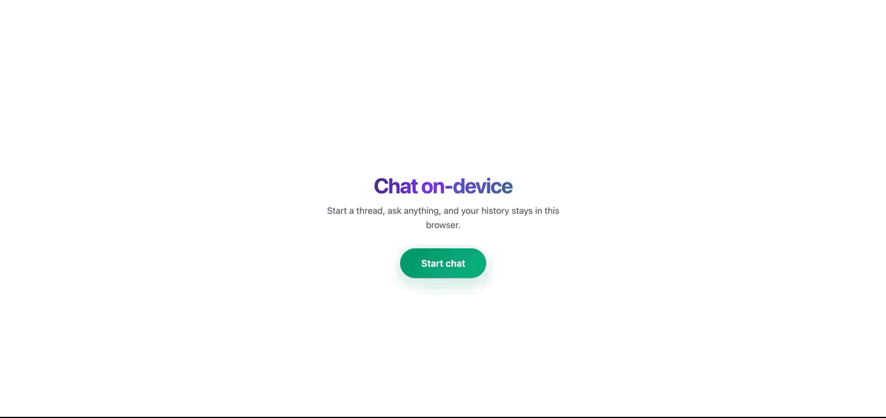
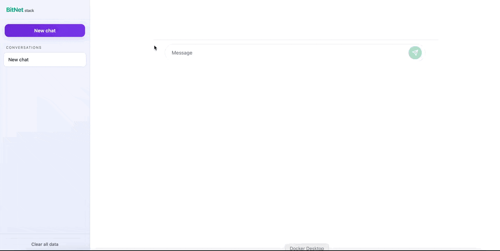

What is BitNet-Stack?
BitNet-Stack is a small stack to run BitNet inference model on your local machine. It provides an easy to use web UI to chat with the model.
The model is a compact BitNet GGUF build suited for local use. The server streams answers so you see text appear as it is written, not only after the full reply is done.
Main features
You type in a chat box and get answers like a normal chat app. The interface is built for back-and-forth talk, not one-off commands only.
Each chat thread keeps a session with the model. Your last messages stay in context so follow-up questions make sense without repeating everything.
Your conversations are saved in the browser (local storage on your device). When you come back to the same browser, you can see past threads.
A control in the UI clears all saved chats and related sessions so you can wipe data when you want a fresh start.
Other useful feature: one docker compose command to build and run, no manual complex setup required.
How it fits together
Docker runs one service that holds the model and the web server. The static page talks to that service. History and UI state live in your browser; the heavy work runs inside the container.
Quick start
You need Docker with Compose.
Clone the repository and enter the folder:
git clone https://github.com/stackblogger/BitNet-Stack.git cd BitNet-Stack
From the project root, start the stack:
docker compose up --build -d
First build can take time while the image pulls the model. Then open the app in your browser (for example
http://localhost:5001 if you use the default port mapping in docker-compose.yml).
Examples
Here are some examples of how you can use BitNet-Stack.
Conversational chat

Add assets/conversational-chat.gif
Context across messages

Add assets/context-memory.gif
Clear all chats

Add assets/clear-all-chats.gif
Generate an article
Ask for an outline or a full short article on a topic. You can follow up to change tone or length.

Add assets/generate-article.gif
Generate code
Describe what you want in plain language and ask for code in the language you prefer. Review and test anything it suggests before you use it.

Add assets/generate-code.gif
Tips
- Change the host port in
docker-compose.ymlif port 5001 is already in use.